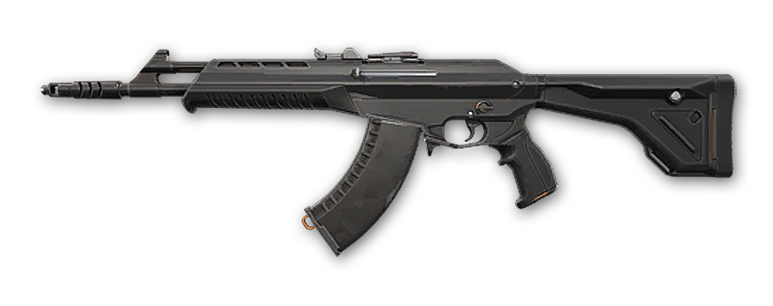
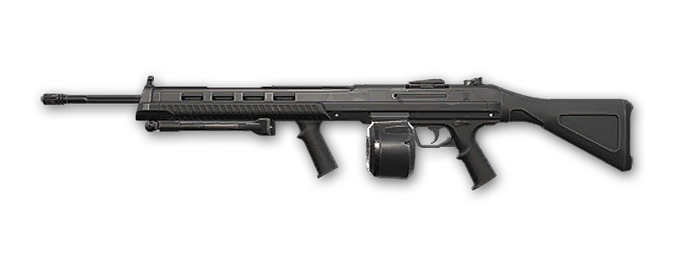

ARMAS
En Valorant tenemos a nuestra disposición una amplia selección de armas entre las que escoger que van desde pistolas hasta rifles de francotirador y escopetas.
Cada una de ellas tiene un nombre propio y una forma efectiva de ser usada,
ya sea para disparar a la cabeza de forma precisa o bien acribillar a los enemigos antes de que puedan plantar la spike.
A continuación y como parte de esta página les mostraremos ordenado por categoria cada arma.
Classic
El modo de disparo principal es preciso si no se está en movimiento, y también dispone de un modo de disparo en ráfaga para los encuentros cuerpo a cuerpo.
Ghost
La Ghost cuenta también con un amplio cargador por si lo necesitáis. Si el objetivo está lejos, tendréis que controlar la velocidad de disparo. Pulsad el gatillo con rapidez cuando los tengáis cerca.

Sheriff
Sus poderosos disparos causan un retroceso pronunciado y dominar esta arma requiere dedicación.
Si la empuñáis con precisión, vuestros enemigos correrán al veros.

Frenzy
Se trata de una pistola ametralladora ligera que destaca a la hora de disparar en movimiento. Tiene una velocidad de disparo muy alta, pero es difícil de controlar, así que a media distancia es mejor apostar por ráfagas cortas.

Shorty
Se trata de una escopeta ligera de barril corto que resulta letal cuerpo a cuerpo pero solo puede dispararse dos veces antes de tener que recargarla. Complementa de maravilla a las armas de larga distancia.

Stinger
Este subfusil es más potente a media y larga distancia que el resto, pero para ello sacrifica parte de su velocidad de disparo y movilidad.
El cargador de 20 balas puede vaciarse en un abrir y cerrar de ojos si os dejáis llevar por el retroceso, pero también os permitirá acertar disparos letales a distancias medias con la ayuda de la mira y un disparo controlado.

Spectre
Es un arma todoterreno con estadísticas de daño, velocidad de disparo y precisión muy equilibradas tanto a distancias cortas como medias.
Acecha en las esquinas de todos los mapas y, si tenéis buen pulso, os permitirá acabar con vuestros enemigos desde lejos.

Bulldog
Una vez que aprendéis a decidir cuándo disparar, se trata de una apuesta segura. El modo alternativo dispone de una mira que os permite disparar ráfagas cortas con precisión a media y larga distancia.

Guardian
Es el rifle para tiradores por excelencia. Es más pesado y cuenta con menos movilidad que los demás, pero también preciso y potente. Perfecto para cazar cabezas a larga y media distancia.

Phantom
El modo automático es perfecto para los encuentros en espacios reducidos, mientras que las ráfagas cortas son la opción indicada en cualquier otra situación. Es mucho más precisa si no se dispara en movimiento.

El Vandal inflige mucho daño a larga distancia y es ideal para aquellos que se centran en acertar tiros a la cabeza. Sin embargo, va perdiendo estabilidad con el tiempo.
Vandal
El Vandal inflige mucho daño a larga distancia y es ideal para aquellos que se centran en acertar tiros a la cabeza. Sin embargo, va perdiendo estabilidad con el tiempo.
Marshal
Se trata de un fusil de francotirador ligero con una sola opción de zoom que mantendrá a los enemigos a raya. Eso sí, la baja velocidad de disparo garantiza que, si no acertáis en el objetivo, quedaréis expuestos.
Operator
El Operator es un fusil de francotirador de cerrojo muy potente con zoom dual. Cuenta con una movilidad nula, pero sus balas derribarán a cualquiera de un solo impacto.
Bucky
Pesada pero estable, el modo de disparo principal de la Bucky ayuda a vigilar esquinas en espacios reducidos y resulta ideal para cargar contra los enemigos cuerpo contra cuerpo. El modo de disparo alternativo es preciso a media distancia.

Judge
La Judge es un arma estable, pero se vuelve volátil si se dispara con mucha rapidez.
El modo de disparo principal es perfecto para las distancias cortas; si queréis acertar a objetivos a más de un metro de distancia, tendréis que apuntar con calma y precisión.

El gran cargador de la Ares significa que se le da de maravilla el fuego continuo e infligir grandes cantidades de daño a grupos de enemigos.
Ares
El gran cargador de la Ares significa que se le da de maravilla el fuego continuo e infligir grandes cantidades de daño a grupos de enemigos.

Odin
Dispara de forma continua e inflige mucho daño con una estabilidad sorprendente. Cubrid de balas a los enemigos en espacios reducidos o recurrid al modo alternativo para convertiros en una torreta andante.
Navaja Táctica
Si no os quedan balas, siempre tenéis vuestra navaja. Os permite correr con rapidez, destruir objetos mucho más rápido y acabar con enemigos por la espalda de una sola cuchillada si usáis el modo alternativo.